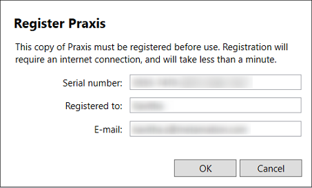
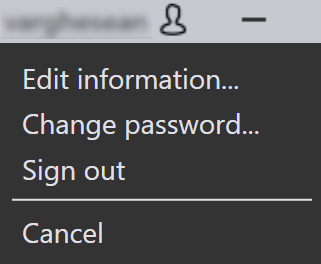
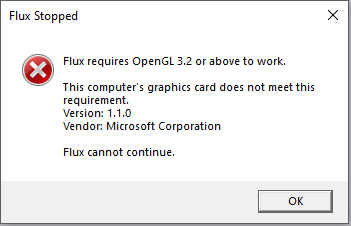

Sunucu kurulumu
TruSmartCAM Sunucu kurulumunu SQL ile birlikte kurmak için talimatları izleyin.
|
Yönetici Hakları
Bu kurulumu çalıştırmak için kullanıcının yönetici ayrıcalıklarına sahip olması gerekmektedir. |
-
Kuruluma başlamak için Setup.TruSmartCAM.<version>.exe dosyasını çalıştırın.
| Version bir sayıdır. |
-
Lisans sözleşmesini okuyun ve I accept the agreement seçeneğini işaretleyin, ardından Sonraki butonuna tıklayın.

Adım 1 : Kurulum Konumu
-
Kurulum dizinini belirtin veya varsayılan kurulum konumu olan
C:\Program Files\Metamation\Praxisdizinini kabul edin ve Sonraki butonuna tıklayın.-
C:\Program Files\Metamation\Praxis- Kurulum klasörü şu klasörleri içerecektir: Bin, MetaCAM, Samples ve Tracker. -
C:\Program Data\Metamation- Veri Klasörü şu klasörleri içerecektir: TruSmartCAM, TecZone ve MetaCAM.
-

Adım 2 : Bileşen Seçimi
| Kurulum Türü | Bileşenler |
|---|---|
Full |
Server + Desktop client + Engine |
Client |
Desktop Client |
Server |
Server + Desktop client |
Station |
TecZone, MetaCAM, RightAngle(Bend Controller), Vulcan(Laser Machine Controller) gibi tüm İstasyon Terminallerini seçer |
Custom |
Kullanıcı seçimine göre seçer. |
-
Full Installation seçeneğini seçin. TruSmartCAM Tools’dan Code Senders ve Bend Code Senders seçeneklerini seçin. Şimdi Kurulum türü Özel olarak değişir. Sonraki butonuna tıklayın.

Adım 3 : SQL Server Kurulumu Seçimi
|
SQL Express 2022 kurulumu yalnızca TruSmartCAM Sunucusu için gereklidir. Bu seçenek Client ve Sync Kurulumları için mevcut değildir. Ayrıca bu seçenek ilk kez İŞARETLİDİR ve kurulur, bundan sonra göz ardı edilebilir. TruSmartCAM sunucusunda SQL zaten kurulu ise, kullanıcı Adım 3’ü atlayabilir. |
-
Select Additional Tasks’ta: Install SQL Express seçeneğini işaretleyin ve Sonraki butonuna tıklayın.
-
Ready to Install’da: Tüm kurulum özelliklerini özetleyin ve Install butonuna tıklayın.

Adım 4 : SQL Server Kurulumu
TruSmartCAM bileşenleri kurulduktan sonra, yükleyici SQL sunucu kurulumuna geçer. Lisans Sözleşmesini kabul edin ve SQL express’i varsayılan seçeneklerle kurun.

Kurulum tamamlandıktan sonra Close butonuna tıklayın ve kurulumu tamamlayın.

| Windows sürümüne bağlı olarak, SQL kurulumunu kapatmak yeniden başlatma istemi gösterebilir. |
Adım 5 : Windows Masaüstü kısayolları
-
SQL kurulumundan sonra, Sistem yeniden başlamazsa, Launch TruSmartCAM onay kutusunu seçin ve Finish butonuna tıklayın.
-
Sistem yeniden başlarsa, Masaüstündeki TruSmartCAM kısayol simgesini başlatın veya Windows Başlat Programı’nda TruSmartCAM yazın ve Yönetici olarak çalıştır seçeneğini kullanın.
| Sunucu kurulumu: TruSmartCAM ve TruSmartCAM License Kısayol simgeleri Masaüstünde mevcuttur. + Client/SYNC Kurulumu: Masaüstünde yalnızca TruSmartCAM kısayol simgesi mevcuttur. |

Adım 6 : Lisans Kaydı
-
Serial Number alanına, Trumpf Metamation Servis Ekibi tarafından sağlanan TruSmartCAM Seri anahtarını yazın. "Registered to" alanına <Company Name> ve E-posta yazın. OK butonuna tıklayın.

|
Network güvenlik duvarının lisans kaydını engellemesi veya TruSmartCAM Sunucu PC’sinde internet olmaması durumunda, TruSmartCAM lisansı Çevrimdışı aktivasyon ile yapılır. C:\ProgramData\Metamation\Praxis Klasöründen Prax.request dosyasını Trumpf Metamation Servis Ekibine e-posta ile gönderin. Trumpf Metamation Ekibi bu klasöre bırakılması gereken Prax.lock dosyasını sağlayacaktır. |
Adım 7 : İlk kez Yapılandırma
-
Veritabanı Adını yazın ve Veri Depolama Konumunu ayarlayın. SQL Sunucusu Kullan onay kutusunu seçin ve Veritabanına bağlanmak için SQL sunucu adını seçin. OK butonuna tıklayın.

-
TruSmartCAM Desktop Client, alt kısımda Database Connection Succeeded yazısını göstererek açılır.
-
TruSmartCAM, TecZone ve MetaCAM Yapılandırma dosyaları varsayılan yapılandırma makineleri veya TruSmartCAM lisans makinelerine göre oluşturuldu. Aynı yapılandırma tüm TruSmartCAM İstemcileri arasında paylaşılacaktır.

Hoş geldiniz ekranı, Windows Kullanıcı LoginName ile TruSmartCAM Giriş ve İsim olarak gösterilir. İlk TruSmartCAM Kullanıcısı Site Yöneticisi olarak kabul edilir. E-posta ve Parola girin. Tamam butonuna tıklayın.
Bir sonraki sefer için oturum açma kimlik bilgilerini kaydetmek için Beni hatırla onay kutusunu seçin. Beni hatırla onay kutusunu temizlemek, TruSmartCAM uygulaması başlatıldığında oturum açma ve parola iletişim kutusunu her seferinde görüntüleyecektir.

Adım 8 : TruSmartCAM oturum açma
-
TruSmartCAM’i kapatın ve yeniden açın. Sistem, TruSmartCAM oturum açma kimlik bilgilerini girmenizi ister.

-
Oturum açmış kullanıcı adı, TruSmartCAM uygulama başlığında kullanıcı simgesinin yanında görüntülenir.

-
Kullanıcı simgesinin üzerine geldiğinizde, sistem şunları görüntüler:

-
Kullanıcı rolü (örneğin: Programmer, Admin).
-
Oturumu kapatmak için kısayol: Ctrl+L.
-
-
Kullanıcı simgesine tıklamak, aşağıdakileri yapmanıza olanak tanıyan bir menü açar:

-
Bilgileri Düzenle… - Profil bilgilerinizi güncelleyin.
-
Şifreyi değiştir… - Hesap parolanızı değiştirin.
-
Oturumu kapat - Uygulamadan çıkış yapın.
-
İptal - Herhangi bir değişiklik yapmadan menüyü kapatın.
-
Adım 9 : Fabrika Makine Yapılandırması
-
TruSmartCAM Lisansı [Tüm makineler lisans bitini etkinleştirir]: Varsayılan TruSmartCAM Makinesi ve Malzeme, Fabrika Yapılandırması olarak kabul edilir.
-
TruSmartCAM Lisansı [Demo yok ve birkaç makine biti etkinleştirildi]: Bu Birkaç makine ve varsayılan Malzeme, Fabrika Yapılandırması olarak kabul edilir.
-
C:\Program Files\Metamation\Praxis\Samples\Partskonumundan yeni bir Parça (Open → Import) yapın ve Parçanın başarıyla içe aktarılıp aktarılmadığını doğrulayın.

Not 1 : TruSmartCAM Monitor
-
Engine Kurulumu ile TruSmartCAM Monitor (Site admin hakları):
-
Engine ile birlikte Site Admin TruSmartCAM Hakları ile TruSmartCAM Monitor aşağıdaki seçeneklere sahip olacaktır:
-
TruSmartCAM yapılandırmasını, TecZone, MetaCAM yapılandırmasını tüm TruSmartCAM İstemcilerine itin. Ayrıca Yeni TruSmartCAM Kullanıcı Girişi oluşturma haklarına sahiptir.
-
Show Agents, TruSmartCAM Lisansına göre otomasyon görevini yapmak için kullanılabilir toplam engine’i gösterecektir.
-
-

-
Engine Kurulumu olmadan TruSmartCAM Monitor (Site admin hakları):

-
Engine Kurulumu olmadan TruSmartCAM Monitor (Site Admin olmayan haklar):

|
TruSmartCAM uygulamasını çalıştıran PC’de Engine TruSmartCAM bileşeni kurulu olmalıdır [Sunucu PC’si veya herhangi bir İstemci kurulumunda]. Engine TruSmartCAM bileşeni kurulu PC, tüm otomasyon görevlerini yapmak için 7/24 çalışıyor olmalıdır. |
Not 2 : Lock Tracker
-
TruSmartCAM Sunucu Masaüstünde bulunan TruSmartCAM License kısayoluna tıklayın. Alternatif olarak, herhangi bir web tarayıcısında http://localhost:7171/metamation/locktrack url’sini açın.
Bu, Lisans bilgilerini, TruSmartCAM mevcut oturum bilgilerini ve Günlüğü içeren Lock Tracker modülünü açacaktır.
LockTracker ANA SAYFA: Bu, TruSmartCAM Seri Numarasını, Seri Son Kullanma tarihini ve Seri bit bilgilerini gösterir.

LockTracker OTURUMLAR Sayfası: TruSmartCAM Desktop client PC, PMonitor, PEngine Durumu gibi mevcut TruSmartCAM Sunucu bağlı bilgileri.

LockTracker GÜNLÜKLER Sayfası: TruSmartCAM istemci başlatma ve çıkış | Pmonitor başlatma ve PEngine bağlantı/bağlantı kesme durumu vb. bu Günlükler sayfasında görüntülenebilir.

Not 3 : OpenGL
-
TruSmartCAM uygulaması açılırken hemen kapanıyor ve pmonitor görev çubuğunda gösterilmiyor.
-
Bu, OpenGL sorununun göstergesidir.
-
Bunu doğrulamanın başka bir yolu: C:\Program Files\Metamation\Praxis\Bin\Flux.exe dosyasını açın, OpenGL sorunu hakkında hata iletişim kutusu görüntülenir.

-
C:\ProgramData\Metamation\Praxis\Prax.ini dosyasını, options bölümünde GLVersion=1 ile güncelleyin, TruSmartCAM uygulamasının başarıyla açılmasını sağlar.
[Options]
GLVersion=1.0